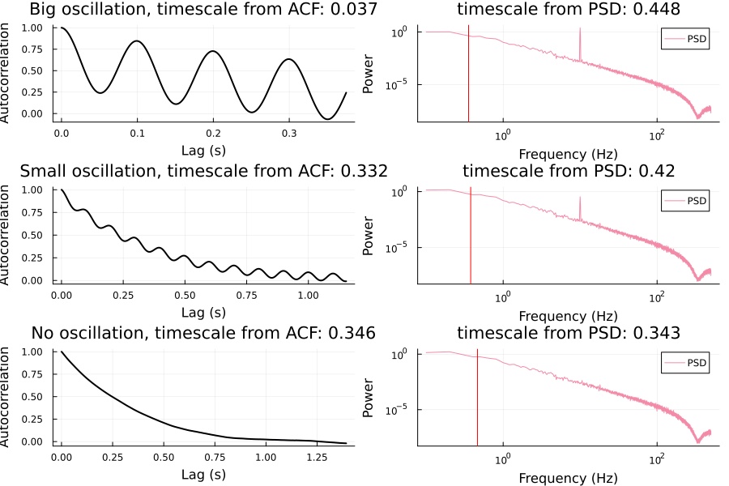

Navigating the Forest of INT Metrics
The main user-facing function in IntrinsicTimescales.jl is acw. For reference, see the section Model-Free Timescale Estimation. acw offers quite a number of different ways to estimate timescales. The situation might be confusing for newcomers and even seasoned researchers. INTs had been a part of my life for the last 5 years and even I occasionally find myself unsure on what to do. As experimental researchers, we do not have the luxury of a ground truth that we can use to validate our estimations. If we had, we would not need to estimate anything in the first place. The best we can do is to compare our results to the simulations where the ground truth is known, literature and theory. I believe that experimental researchers are entitled to look at computational researchers and package developers and ask them "Okay, this is all well and good but what I should do?". The problem is, there is almost never a gold standard / best practice that we can use and get the best results. Therefore I opted to avoid recommending one. Nonetheless, there are certain rules of thumb and certain things to not do. The purpose of this section is to talk about them.
I should note that this section will not go into detailed discussions about each metric. This is done in the Practice section. If you are not familiar with the INTs, I would highly recommend you to go through it to build your intuition slowly. The timescales of understanding are unfortunately slow :upsidedownface:.
In the function acw, one can set the different methods to use as simply:
acwresults = acw(data, fs; acwtypes=[:acw0, :acw50, :acweuler, :auc, :tau, :knee])Different metrics specified in acwtypes is automatically calculated and returned in acwresults. Below, I'll try to show you the mental workflow on deciding which metric to use.
Getting ACW-0 Out of the Way:
Never use :acw0 in serious research. I considered to not include it in the final package but I know that some people will ask for it anyway. So I decided to put it here but warn against it. There are serious problems with ACW-0. Consider when an exponential decay function $f(x) = e^{\lambda x}$ reaches zero. There are two cases here. In the first case $\lambda$ is a real number. This is the pure exponential decay function without oscillations we usually encounter in fMRI or calcium imaging (after averaging over channels). In this case, $f(x)$ never touches zero. You might protest this suggestion by saying "but look, in my data I plot the ACF and it clearly touches zero". This is due to finite data bias. In all data, you have this bias and ACW-0 amplifies it. Now let's consider the second case where $\lambda$ is complex. This is the case we deal with usually in EEG / MEG data with oscillatorions. Let $ \lambda = a + bi $, then by Euler's formula, we have $ f(x) = e^{ax} e^{ibx} = e^{ax} (cos(bx) + i sin (bx) )$. Since our data is real valued, the actual autocorrelation function is the real part of this. Here, the real part of $\lambda$, $\mathscr{R}(\lambda) = a$ is the decay rate of the ACF and therefore, the timescale. Now we can ask ourselves when the ACF touches zero. Solving $cos(bx) = 0$ for x, we will get x = \frac{\pi}{2b} $. Clearly ACW-0 here does not show the timescale, it just shows the oscillatory artifact. If you are interested in oscillations, that is perfectly fine but there are way better tools for that, such as the Fourier transform. This is the case when you have long data. In the case of smaller data, finite data bias might beat oscillatory artifacts. Now there is one more case I haven't talked about: multiple oscillations in ACF. But it is clear that that will suffer from the same problem. I used to think ACW-0 is justified in data with very low sampling rate, such as fMRI, but area under the curve (:auc) and estimating the decay rate directly (:tau) especially with the option skip_first_lag = true are much better methods. Seriously, I can tell you horror stories about ACW-0. Stay away from it if you don't know what you are doing.
ACF vs PSD based methods
With that out of the way, we face three branches: 1) ACF based methods which do not involve fitting (:acw50, :acweuler, :auc), 2) ACF based methods which do involve fitting (:tau) and 3) PSD based methods (:knee). I would recommend looking at the PSDs and ACFs to decide whether to use ACF or PSD based methods. Here is a quick example:
using IntrinsicTimescales
using Plots
using Random
tau = 0.5
f = 10.0
oscillation_coefficient = 0.9
duration = 10.0
dt = 1 / 1000.0
data_mean = 0.0
data_sd = 1.0
n_trials = 30
# For reproducibility
seed = 666
rng = Xoshiro(seed)
data = generate_ou_with_oscillation([tau, f, oscillation_coefficient], dt, duration, n_trials, data_mean, data_sd, rng=rng, deq_seed=seed)
acwresults = acw(data, 1 / dt; acwtypes=[:acweuler, :knee], average_over_trials=true)
p = acwplot(acwresults)
title!(p[1], "Big oscillation, timescale from ACF: $(round(acwresults.acw_results[1], digits=3))")
title!(p[2], "timescale from PSD: $(round(acwresults.acw_results[2], digits=3))")
oscillation_coefficient_2 = 0.99
data_2 = generate_ou_with_oscillation([tau, f, oscillation_coefficient_2], dt, duration, n_trials, data_mean, data_sd, rng=rng, deq_seed=seed)
acwresults_2 = acw(data_2, 1 / dt; acwtypes=[:acweuler, :knee], average_over_trials=true)
p2 = acwplot(acwresults_2)
title!(p2[1], "Small oscillation, timescale from ACF: $(round(acwresults_2.acw_results[1], digits=3))")
title!(p2[2], "timescale from PSD: $(round(acwresults_2.acw_results[2], digits=3))")
data_3 = generate_ou_process(tau, data_sd, dt, duration, n_trials, rng=rng, deq_seed=seed)
acwresults_3 = acw(data_3, 1 / dt; acwtypes=[:acweuler, :knee], average_over_trials=true)
p3 = acwplot(acwresults_3)
title!(p3[1], "No oscillation, timescale from ACF: $(round(acwresults_3.acw_results[1], digits=3))")
title!(p3[2], "timescale from PSD: $(round(acwresults_3.acw_results[2], digits=3))")
plot(p, p2, p3, layout=(3, 1), size=(900, 600))

We can see that in the case of strong oscillations, the PSD based method (:knee) performs better. In the cases of no oscillation (which is usually the case in fMRI data), it doesn't matter which metric to use. This gives the impression that we should always use :knee no matter the scenario. The simulations give this impression but empirical data can be tricky. I've had cases where the PSD based method failed to converge or gave negative timescales. My advice would be to look at the PSDs and see if the estimated knee frequency (indicated with a vertical line) looks okay.
The bottom line is that there is no one-size-fits-all method. It all depends on the data. A good practice is to use multiple metrics and see if they both give the same empirical result and when writing your paper, reporting one of them in the supplementary material. Reviewers these days often ask for this anyway. One advantage of IntrinsicTimescales.jl is that it makes it very easy to do that.
Then on the question of :acweuler and :acw50: for the most part it doesn't really matter. In my experience they almost always very highly correlate, to the degree that they are interchangable. Note that if the ACF fits an exponential decay function very well, :acweuler directly gives the inverse decay rate of ACF whereas :acw50 gives the inverse decay rate up to a constant (which happens to be $log{2}$).
:tau vs :acw*
In the case where sampling rate is very low (fMRI data, certain calcium imaging data) :tau works much better. The reason is that in the case where the decay rate of ACF is faster than the sampling rate, the temporal resolution of ACF (which has the same temporal resolution as your time-series data) can't catch up with the decay and in practice you end up in every ROI / subject showing an ACW of 1-2 lags (with occasional rare exception of 4-5 lags). In the case of super-low sampling rate (fMRI) I can also recommend setting the option skip_zero_lag=true.
When to use :auc?
For low sampling rates, for example, fMRI. Regarding :tau versus :auc, I prefer :tau with skip_zero_lag=true but that's my personal preference. I'm writing up a short piece on this which I'll put to this documentation soon. You can see two very good papers using these approaches in Ito et al., 2020 (using :tau with skip_zero_lag=true) and Manea et al., 2022 (using :auc).
Should I average_over_trials?
In general, yes. In my experience, averaging ACFs or PSDs and then estimating the timescale (which is what average_over_trials does) works much better than estimating one timescale from each trial and averaging over them. If you suspect that there might be a nonstationarity in your timescales (i.e. your timescales change over time), you can investigate timescales in each trial by setting average_over_trials off. Needless to say, this depends on having trials, which means you should not use this if you have, say, one long fMRI recording.
Should I skip_zero_lag?
Yes for fMRI, no for EEG / MEG.
Should I allow_variable_exponent?
This is an engineering problem. If we allow variable exponent, we are adding one more parameter to estimate which makes the fitting more difficult and in practice, most EEG / MEG spectra have a power law exponent of approximately 2. But in the cases where this is not correct, it is necessary to allow variable exponent. My recommendation is to plot the result using acwplot and see if the knee frequency is correctly estimated (check vertical line) visually. In the next version of IntrinsicTimescales.jl (v0.6.0), I'll add more diagnostic plotting capabilities which will make this process much smoother. Meanwhile also consider using the python package FOOOF which is not a general INT toolbox but can estimate INTs using the knee frequency method. In fact, the :knee option in IntrinsicTimescales.jl is trying to mimic FOOOF package's behavior, with slight differences (e.g. using SciML environment as opposed to SciPy).
Should I set constrained=true?
In certain cases it might be beneficial to set constrained to true for :knee. This effectively sets bounds on the values each parameter can take. But in my experience, NonlinearSolve.jl (which is the engine behind constrained=false) performs better than Optimization.jl (which is used when constrained=true) (note that this is entirely anecdotal). Furthermore, if the fitting is problematic and gives unreasonable results (such as negative timescales), I would first look at the PSDs to see if they are indeed Lorentzian shaped (i.e. in the log-log space they start out as a flat line and then decay with a slope of -2). Most of the time, computational problems are actually model problems, in the sense of using the wrong model (see Folk Theorem of Statistical Computing).
Some practical advices in this case: 1) average_over_trials if you haven't done so. This results in a smoother PSD which is more amenable to fitting. 2) Check your lower frequency limit in the PSD. Remember that your PSD should look like a Lorentzian, the low frequency section should be flat. If the full PSD is just a line (i.e. scale-free), :knee can not be used. 3) Check the length of each of your trials. Let's assume that during the preprocessing stage you applied a high-pass filter of 1 Hz. As a rule of thumb, you should contain at least 3 cycles of the lowest frequency in your data for each trial. This means that you should have at least 3 seconds of data in each trial. Nonetheless, it will still be quite noisy. I suggest at least 10 seconds per trial. If your timescale is at, say, 3 Hz and your data is only 1 second, you will barely see the knee frequency in your PSD and wrongly conclude that your data is scale-free.
Should I use parallel=true?
Depends on the size of your data. If you have a multi-core machine, it might speed up the computation significantly. But if your data is small, the overhead of parallelization might actually slow down the computation. You can see the number of threads by running Threads.nthreads(). If it is 1, you are not using parallelization. To start Julia with multiple threads (say, 4), you can either run julia -t 4 or set the environment variable JULIA_NUM_THREADS=4. In VsCode, you can set the environment variable by going to File -> Preferences -> Settings -> Julia: Num Threads and setting to the number of threads you want to use.
When to use Bayesian methods?
Bayesian methods are very novel and experimental. They can work terrificly good especially in the case of short data and missing samples. But they come at a cost of significantly increased computation time. I would consider them in cutting-edge research, for example, an experimental scenario where you have to compare timescales of two different conditions with different trial lengths (standard ACF / PSD based methods can be sensitive to data length). In any case, don't forget to do posterior predictive check if you are using Bayesian methods.
Can I calculate INTs in task trials (ERP/ERF/ASSR and so on)?
No. Both ACF and PSD assume stationarity. Task trials are nonstationary (i.e. the signal's mean value is changing over time). I would recommend calculating INTs only in resting state or continuous tasks such as listening to a story or some continuous behavioral tasks (see Manea et al., 2022 or Çatal et al., 2024).
TL;DR
- Don't use ACW-0 for anything serious.
- There is no one-size-fits-all method. Experiment with different measures and most importantly, look at your data.
- If there are strong oscillatory components in your PSD, consider using
:knee. - If your sampling rate is very low (fMRI), consider using
:tauwithskip_zero_lagor:auc. - If you have trials,
average_over_trials. - If your knee frequencies are at the wrong place after visual inspection, consider using
allow_variable_exponent. - Look at your PSD before setting
constrained=true. - If you are considering using Bayesian methods, make sure to check the posteriors.
- Calculate INTs only in stationary data.